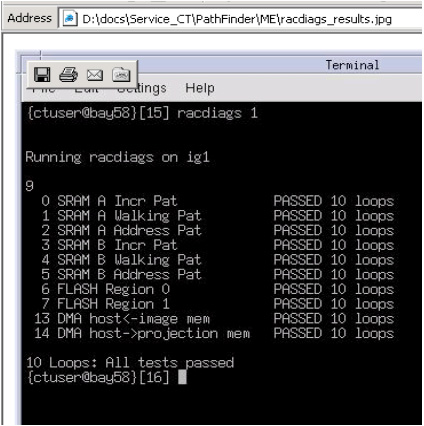

Home >
GEMS Proprietary Class: A
Direction 5134798-800, Rev# 1
Home > | GEMS Proprietary Class: A |
| Last Revised on: | 19 May 2005 |
Check the operation of the ECG monitor by prescribing a patient cardiac scan.
Start up applications.
Click on [New Patient].
For patient ID, type: ECG Test.
Click on GE tab.
Click on [Protocol 25.1 Routine Chest].
Click on [Gating] button.
The system should respond with “System waiting for signal…” message.
At the ECG Monitor, connect ECG leads to left side test points on monitor.
White lead to white test point.
Red lead to red test point.
Black lead to black test point.
Turn on ECG Monitor (front button).
Press Test Mode (front button).
Press SIM RATE OFF (front button).
Press SIM RATE OFF button to toggle to your desired beats-per-minute setting.
The monitor should now output a test waveform at the beats per minute selected.
At the GRE/Xtream console, view this waveform.
If the waveform is not viewed at the console, check for proper Ethernet communications between the console and ECG Monitor by executing the following:
Open a Unix shell.
Type: ping 10.44.22.20.
| NOTE: | The monitor should repeatedly respond to a “ping” time and packet information if the connection is correct. |
| NOTE: | ifconfig -a displays the IP address for the ECG Monitor (eth4 port). 10.44.22.20 should be displayed for this port. |
RACDIAGS is the test for checking the operation of the three Image Generator modules, or IGs.
RACDIAGS is not executable from Common Service Desktop, but it is described there by following this path: Common Service Desktop→Diagnostics→Image Generation→RAC Diagnostics.
Run RAC Diags (Reconstruction Acceleration Diagnostics):
Open a Unix shell.
Type: racdiags 1 2 3.
Check the test results. The screen output listed below should be seen for each of the 3 IGs (namely, ig1, ig2, and ig3).
Illustration 1: IG Test Results

Next, refer to Hardware Upgrade Finalization section in Pathfinder ME-2 Hardware Installation.

|